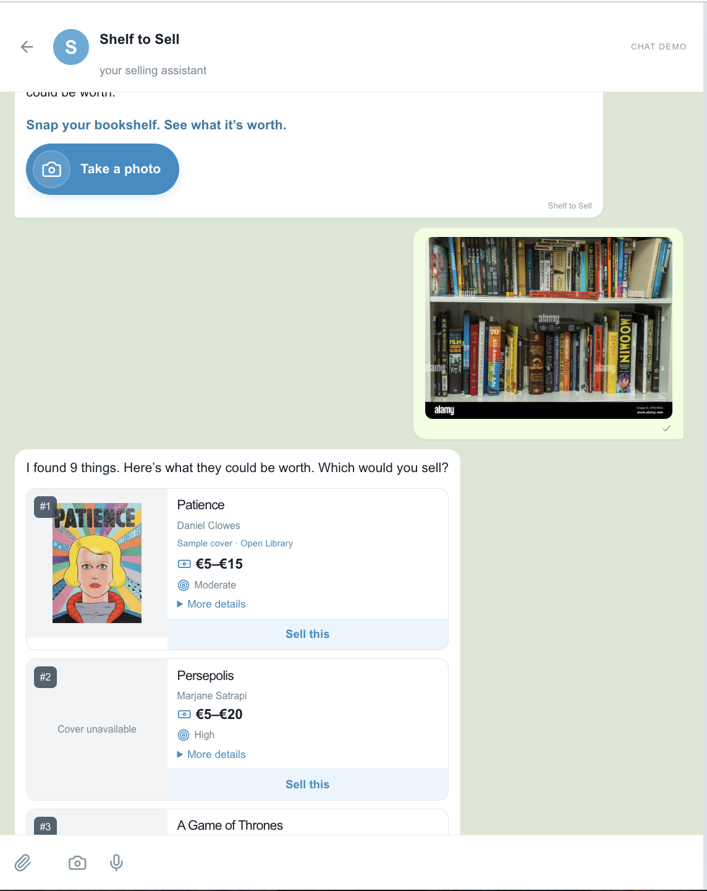

02 / C2C selling / Shelf to Sell
“What’s my wardrobe worth?”
The Missed Opportunity of C2C Selling.
When I was working at eBay, one of the biggest problems—or opportunity areas—was this: if only we could know what all the customer has, we could generally entice them to bring it in at the right time.
Supply matching in a C2C setup is significantly harder. You can’t just ramp up supply when you feel like it, or run a campaign and expect a certain type of user to bring in a certain type of book. Sure, you have intermediaries and resellers. But at the same time, managing the dynamics of demand and supply is harder.
Point number two: people already have the most popular items at home. They’re probably just too lazy to bring them up.
The cost of cataloging has always been ridiculous, especially when you’re talking about a product that costs barely a few euros. Nobody believes it’s going to be worth their time to take photographs of every item, isolate them, and separate them. At the same time, without that, it becomes really hard to even know what every person has.
Now, the beauty of image detection and AI is how we can start taking that effort away.
01 / Make it easy
It’s never about one product at a time. It’s about a bulk.
I have a bookshelf. I have my electronics cabinet. I have my clothes cupboard.
Sure, maybe clothes are a bit complicated. But at least the electronics cabinet, bookshelf, and a few other places where items are spread out become a lot easier. Everyone can just take a photo in bulk and have the AI sit and do the rest.
A simple demo makes this easier to see. Take one photo, separate the different items into cards, show an image, a title, and an expected price. Then I should just be able to say, “Okay, sell this, sell this, sell this.”
See the flow
One photo. A shelf of items ready to review.

02 / Go where the customer is
Why do they need to come to your app?
For an app or a service that someone uses occasionally, it’s really hard to expect everybody, number one, to have the app loaded when they need it. Number two, to actually go there and figure out the experience.
But why do you need to?
At the end of the day, if a customer can just share photographs of their store of goods—which is probably a few-second affair—you can take away almost the entire effort.
Think of a chat window where they already are. They send photographs, and the experience does the work from there.
03 / Show them what it’s worth
What could you actually end up earning?
Thirdly, you can gamify the process in a manner that shows people what they can actually end up earning. And, well, just have someone come and pick it up.
C2C commerce, especially from a listing standpoint, is a lot more about friction removal. The perception is that the effort of actually going in and creating a listing is not worth it.
This is where AI can save people real effort. Take the photo in a chat they already use, identify the items, and help them decide what is worth selling. The interaction can be simple even when there is a lot happening behind it.
Try the demo
Take a photo of your shelf. See the individual items and what they might be worth. Choose what you’d sell.
Open Shelf to SellThe demo covers photo scanning, estimated prices and demand, and selecting items. Chat-app integration, listing publication, and pickup are ideas beyond the current demo. Estimates are illustrative; photos are sent to OpenAI for analysis.